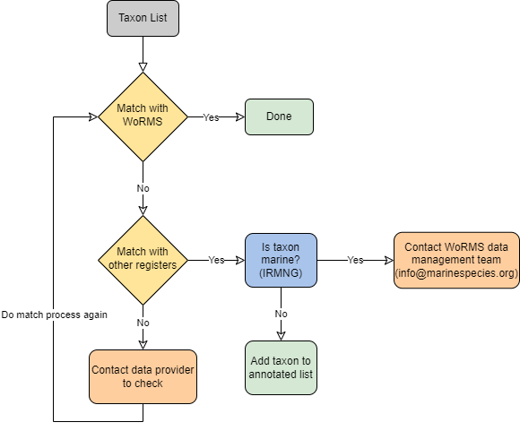
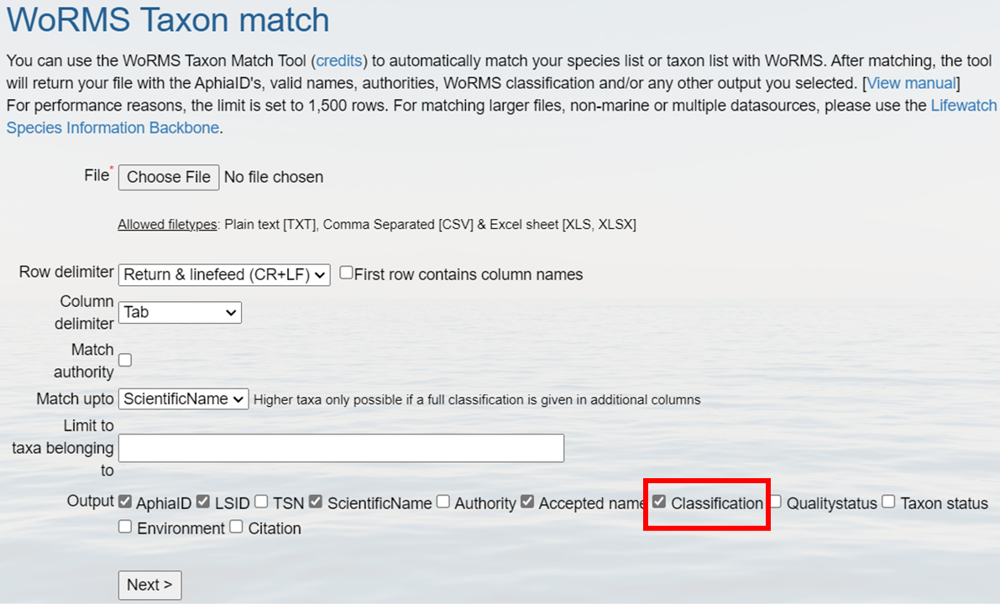
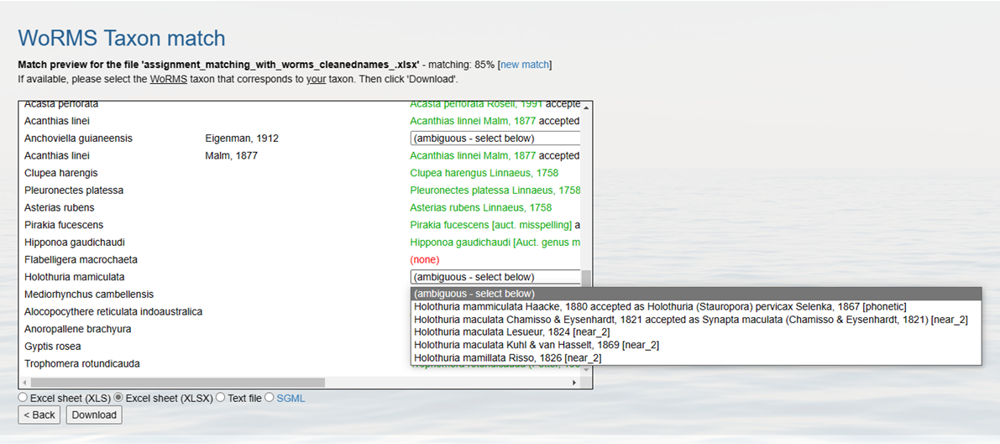

Match Taxonomic Names
OBIS requires all your specimens to be classified and matched against an authoritative taxonomic register. This effectively attaches unique stable identifiers (and digitally traceable) to each of your species. Meaning, if a taxonomic ranking or a species name changes in the future, there will be no question as to which species your dataset is actually referring to. Matching to registers also helps to avoid misspelled or unused terms.
OBIS currently accepts identifiers from three authoritative lists:
- World Register Marine Species (WoRMS) LSIDs
- Integrated Taxonomic Information System (ITIS) TSNs
- Barcode of Life Data Systems (BOLD) and NCBI identifiers
The identifiers (LSID, TSN, ID) from these registers will be used to populate the scientificNameID field. OBIS can accept other LSIDS besides WoRMS, as long as they are mapped in WoRMS. If you would like to include multiple identifiers, please use a concatenated list where each register is clearly identified (e.g. urn:lsid:itis.gov:itis_tsn:12345, NCBI:12345, BOLD:12345).
You should prioritize using LSIDs because they are unique identifiers that indicate the authority the ID comes from. WoRMS LSIDs are also the taxonomic backbone that OBIS relies on, as it is built on marine systems and is linked to the other taxonomic authoritative lists.
You can also use the Interim Register of Marine and Nonmarine Genera (IRMNG) to distinguish marine genera from freshwater genera.
Taxon Matching Workflow
The OBIS node managers have agreed to match all the scientific names in their datasets according to the following Name Matching workflow:

Step 1: Match with WoRMS
The procedure for matching to WoRMS and then attaching successful matches back to your data can be simplified to:
- Prepare a file (.csv, .txt, .xlsx, etc.) with the list of your specimens/taxa
- Upload the file to WoRMS taxon match tool
- Check relevant boxes
- Review returned file
- Resolve any ambiguous matches
- Download file and identify data to include in your Occurrence data table for OBIS
- LSIDs, taxonomic fields, etc.
- Attach LSIDs back to your data using e.g.:
- R (merge)
- Excel (vlookup)
The taxon match tool of the World Register of Marine Species (WoRMS) is an automatic way to download the taxonomic information about your occurrence records, without having to look for each name in the site. It is available at http://www.marinespecies.org/aphia.php?p=match. The WoRMS taxon match will compare your taxon list to the taxa available in WoRMS. The following video demonstrates the basic steps for using the WoRMS Taxon match.
The taxon match takes into account exact matches and fuzzy matches. Fuzzy matches include possible spelling variations of a name available in WoRMS. WoRMS also identifies ambiguous matches, indicating that several potential matching options are available (e.g. homonyms). You can check these ambiguous matches and select the correct one, based on e.g., the general group information (a sponge dataset) or the authority. If this would be impossible with the available information (e.g., missing authority or very diverse dataset), then you need to contact the data provider for clarification. Watch the video below for a demonstration on how to resolve ambiguous or fuzzy matches.
For performance reasons, the limit is set to 1,500 rows for the taxon match tool. Larger files can be sent to info@marinespecies.org and will be returned as quickly as possible. In case you have recorded a taxon that is not registered in WoRMS (e.g., newly discovered species), you should contact them so the database can be updated.
After matching, the tool will return you a file with the AphiaIDs, LSIDs, valid names, authorities, classification, and any other output you have selected.
The WoRMS LSID is used for DwC:scientificNameID.
A complete online manual is available at http://www.marinespecies.org/tutorial/taxonmatch.php. You can attach IDs obtained from WoRMS back to your own data using Excel’s vlookup function. R script to do this is shown below.
R script for attaching Taxon Lists to ID Lists:
If you are familiar enough with R, you can use the merge function to attach the two lists to your data. See a short example of how to use this function below.
#Generate example data table with species occurences, for this example we will only have one column with the scientificName
data<-data.frame(scientificName=c("Thunnus thynnus", "Rhincodon typus", "Luidia maculata","Ginglymostoma cirratum"))
# this would be your matched file from WoRMS, but for example we are generating a simple list with the species names and LSIDs
lsids<- data.frame(scientificName=c("Ginglymostoma cirratum","Luidia maculata","Thunnus thynnus", "Rhincodon typus"),
LSID = c("urn:lsid:marinespecies.org:taxname:105846", "urn:lsid:marinespecies.org:taxname:213112","urn:lsid:marinespecies.org:taxname:127029","urn:lsid:marinespecies.org:taxname:105847"))
#merge data frames together
matched_data<-merge(data, lsids, by = "scientificName", all=TRUE)
matched_dataIncluding "all=T" in the merge function ensures that all rows from both data frames are retained in the resulting merged object (matched_data), even if the scientificName values in data and lsids do not match perfectly. This approach is particularly helpful in cases where there may be typos in scientificName. For example, a mismatch like “Thunus” instead of “Thunnus” would prevent proper linking of data to the corresponding LSID. By including all = TRUE, unmatched rows will still appear in the output, making it easier to identify and review any discrepancies or extra rows that may need correction.
R packages for taxon matching
There are several R packages available to assist you with taxon matching:
- obistools: use the
match_taxafunction to conduct taxon matching for a dataset in R - worrms: use the
wm_records_taxamatchfunction to access the WoRMS API for taxon matching
Both packages provide tools for resolving taxonomic names and ensuring your dataset aligns with accepted nomenclature. However, always verify ambiguous matches using other registers or manual checks to confirm accuracy.
See below for example R code.
library(obistools)
# Read in occurrence table
occur<-read.csv("occurence_table.csv")
# Conduct taxon matching on only the unique instances of each taxa's name
worms<-match_taxa(unique(occur$scientificName), ask=T)
# Merge the matched names back with occurrence data
occur_match<-merge(occur, worms, by="scientificName", all= T)Note we have incldued the ask parameter in match_taxa. This parameter triggers interactive prompts during the taxon matching process, which is useful when multiple matches are found and allows you to manually select the correct taxon.
How to fetch a full classification for a list of species from WoRMS?
When setting up your WoRMS taxon match from the web interface, to obtain the full classification for your list of species, simply check the box labeled “Classification”. This will add classification output in addition to the requested identifiers to your taxon match file, including Kingdom, Phylum, Class, Order, Family, Genus, Subgenus, Species, and Subspecies.

What to do with non-matching names?
If your scientificName does not find an exact match to the WoRMS database, you may get an ambiguous match. According to WoRMS guidelines, ambiguous matches can be marked as one of the following:
- phonetic
- near_1
- near_2
- near_3
- match_quarantine
- match_deleted
See https://www.marinespecies.org/tutorial_taxonmatch.php for definitions of each of these terms.
In each of these cases, WoRMS will try to suggest a species to match your uncertain taxon. Take care to ensure the correct species name is selected given the information in the original documentation. This is especially true for near_2 or near_3 matches. When checking a potential matched name, we recommend referencing the authority and higher taxonomic levels of a given suggestion when possible. For example, if you know the ambiguous species is a sponge, but one of the suggestions is for a mammal, you know that is not the correct name.
Sometimes the species name as is it was originally documented is a name that is not accepted in WoRMS (i.e. Status = unaccepted). In these cases scientificNameID should reflect the name in the scientificName field, even if this name is not accepted. If you or the data provider can confirm with certainty that the name in scientificName can be changed to an accepted name, then verbatimIdentification must be populated with the scientific name as it was originally documented. In general, it is good practice to populate verbatimIdentification with the original taxon identification.

In cases where no match can be found, WoRMS will indicate none. For these cases you should follow these steps:
- Ensure the name was entered correctly and any other information (e.g., authority, year, identification qualifiers) are included in separate columns, not the same cell as the name, as this can sometimes prevent matching
- Match with LifeWatch or another register (see Step 2 below)
- Check that the species is marine
If a scientific name does not appear in any register, you should contact the original data provider, where possible, to confirm taxonomic spelling, authority, and obtain any original description documents, then attempt to match again. If even after this there are no matches, please contact the WoRMS data management team at info@marinespecies.org to see if the taxon should be added to the WoRMS register.
Step 2: Check name in other registers
If you do not find a match with WoRMS, you should next check other registers. The LifeWatch taxon match compares your taxon list to multiple taxonomic standards. Matching with multiple registers gives an indication of the correct spelling of a name, regardless of its environment. If a name would not appear in any of the registers, this could indicate a mistake in the scientific name and the name should go back to the provider for additional checking/verification.
Contrary to the WoRMS taxon match, when several matching options are available, the LifeWatch taxon match only mentions “no exact match found, multiple possibilities” instead of listing the available options. If multiple options are available, these should be looked up and matched manually.
Currently, this web service matches the scientific names with the following taxonomic registers:
- World Register of Marine Species – WoRMS
- Catalogue of Life – CoL
- Integrated Taxonomic Information System – ITIS
- Pan-European Species-directories Infrastructure – PESI
- Index Fungorum – IF
- International Plant Names Index – IPNI
- Global Names Index - GNI
- Paleobiology Database - PaleoDB
Step 3: Is taxon marine?
The Interim Register of Marine and Non-marine Genera (IRMNG) matching services are available through http://www.irmng.org/, as well as through the LifeWatch taxon match. This service allows you to search for a genus (or other taxonomic rank when you uncheck the “genera” box) to check if it is known to be marine, brackish, freshwater, or terrestrial. You can find this information in the row labeled “Environment”. If the taxa is marine, you may have to contact the WoRMS data management team (info@marinespecies.org) to have the taxon added to the WoRMS register (note you may have to provide supporting information confirming taxonomic and marine status).
Taxon Match Tools Overview
See the table below for a summary of the different tools available.
| Tool | Advantage | Disadvantage |
|---|---|---|
| WoRMS taxon match | Accessible online, Does not require coding knowledge | Requires rematch information back to your data |
| obistools::match_taxa | Produces same output as WoRMS taxon match, Already in R so easier to merge back with data | Requires knowledge of R or python |
| worrms::wm_records_taxamatch | Outputs all WoRMS matching information | Outputs a tibble for each taxa name specified; Requires knowledge of R or python |